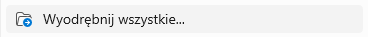
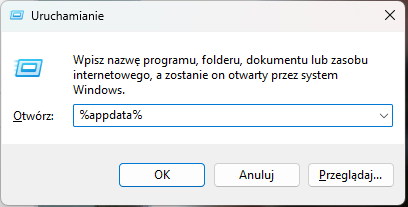
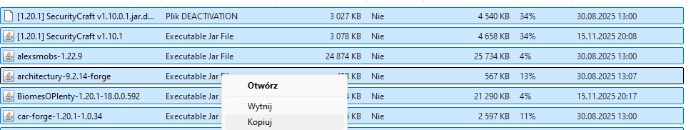

Dane i informacje serwera
| Parametr | Wartość |
|---|---|
| Adres serwera | miasto_piotrkow.aternos.me:54628 |
| Wersja | 1.20.1 |
| Silnik | Forge |
| Mody | SecurityCraft [1.10.0.1], SecurityCraft [1.10.1], Alex's Mobs [1.22.9], Architectury [9.2.14], Biomes O’ Plenty [18.0.0.592], Car Mod [1.0.34], Citadel [2.6.2], Exline Furniture [2.7.3], Grass Overhaul [23.10.10], JCM [2.0.0], JEI [15.20.0.112], JourneyMap [5.10.3], Macaw's Doors [1.1.2], Macaw's Fences [1.2.0], Macaw's Furniture [3.3.0], Macaw's Furniture [3.4.0], Macaw's Holidays [1.1.0], Macaw's Lights [1.1.2], Macaw's HolidayStuff [1.1.1 – MC1.20.1], Macaw's HolidayStuff [1.1.1 – MC1.20.2], Macaw's Paintings [1.0.5], Macaw's Roofs [2.3.2], Macaw's Trapdoors [1.1.4], Macaw's Windows [2.4.0], MTR [4.0.1], MTR Russian Metro Addon [4.0.0–2.0.0], TerraBlender [3.0.1.10], Traveler’s Backpack [9.1.45], WorldEdit [7.2.15] |
| Pełne nazwy modów | SecurityCraft [1.10.0.1] SecurityCraft [1.10.1] Alex's Mobs [1.22.9] Architectury API [9.2.14] Biomes O’ Plenty [18.0.0.592] Car Mod [1.0.34] Citadel [2.6.2] Exline Furniture [2.7.3] Grass Overhaul [23.10.10] Joban Client Mod [2.0.0] Just Enough Items [15.20.0.112] JourneyMap [5.10.3] Macaw's Doors [1.1.2] Macaw's Fences [1.2.0] Macaw's Furniture [3.3.0] Macaw's Furniture [3.4.0] Macaw's Holidays [1.1.0] Macaw's Lights [1.1.2] Macaw's HolidayStuff [1.1.1 – MC 1.20.1] Macaw's HolidayStuff [1.1.1 – MC 1.20.2] Macaw's Paintings [1.0.5] Macaw's Roofs [2.3.2] Macaw's Trapdoors [1.1.4] Macaw's Windows [2.4.0] Minecraft Transit Railway [4.0.1] Russian Metro Addon [4.0.0–2.0.0] TerraBlender [3.0.1.10] Traveler’s Backpack [9.1.45] WorldEdit [7.2.15] |
Gotowa paczka modów do pobrania i insturkcja dodania jej
| Krok | Polecenie | Obraz pomocniczy |
|---|---|---|
| 1. | Pobierz paczkę modów wciskając przycisk u góry | |
| 2. | Wyorębnij plik ZIP do tego samego folderu klikając prawym przyciskiem myszy na folder mody-pioxburg2 |  |
| 3. | Kliknij na raz WINDOWS + R oraz wpisz %appdata% |  |
| 3. | Kliknij na raz WINDOWS + R oraz wpisz %appdata% | |
| 4. | Wejdź po kolei: .minecraft→versions→nazwa twojej wersji→mods |
|
| 5. | Zostaw otwarty ten folder!. Wejdź w pobraną paczkę modów (pioxburg-mody2) i skopiuj wszystkie mody. |  |
| 6. | Wróć do mods i zamień bieżące w nim mody na te które skopiowałeś(aś). Najlepiej zrób Ctrl + A kliknij w ikonkę śmietniczka a następnie wklej (Ctrl + V) |
|
| 7. | Gotowe! Wejdź do gry używając Rozpocznij grę na twojej wersji. |
|
Rejestr Obywateli
| Nick | Imię i nazwisko | Ranga | Właściciel wioski |
|---|---|---|---|
| pioxi_minecraft | Piotr Rejmentowski | Główny prezydent | Piotrków, Piotrowska góra |
| sokowypanek | Filip Miakisz | Administrator | Wioska filipa |
| BurgerJami | Natan Sulewski | Starosta serwera | Wioska natana |
| Juliksonxd | Julia Stanka | Starosta serwera | Juliksonowo, Wioska julki 2 |
| anyanax | Zuzanna Liwska | Starosta serwera | Dżanowo |
| milki-kot | Aleksandra Wysocka | Starosta serwera | Mleczna kraina |
Rejestr miejscowości
| Nazwa | Rodzaj miejscowości | Koordynaty | Województwo | Gmina / Powiat | Miejsca transportowe |
|---|---|---|---|---|---|
| Piotrków | Stolica serwera i stolica woj. piotrkowskiego | -896, 34, 184 | Piotrkowskie | Piotrków / Piotrkowski | Stacje kolejowe, port lotniczy |
| Mleczna kraina | Miejscowość | -2970, 0, 333 | Braszowskie | Piotrowska góra / Piotrowsko-górskie | Stacje kolejowe, port lotniczy |
| Piotrowska góra | Miejscowość ale na prawach gminy / powiatu | -2970, 0, 333 | Braszowskie | Piotrowska góra / Piotrowsko-górskie | Stacja kolejowa |
| Wioska natana | Miejscowość | 3037, 0, 413 | Piotrkowskie | x | Stacja kolejowa |
| Wioska filipa | Miejscowość ale na prawach gminy / powiatu | nieznane | Piotrkowskie | x | Stacja kolejowa |
Sieć Pioxburskich kolei państwowych (PKP)
| Linia | Ze stacji | Przez | Do stacji | Status |
|---|---|---|---|---|
| EPP1 | Braszów główny | Brak | Piotrków centralny | W budowie |
| EPP2 | Radom główny | Brak | Piotrków centralny | W budowie |
| EPP3 | Braszów główny | Brak | Radom główny | W budowie |
| IC1 | Braszów główny | Braszów wschodni, Piotrowska góra, Piotrków centralny, Piotrków północny, Wioska julki 2 | Juliksonowo główne | W budowie |
| IC2 | Radom główny | Radom północny, Dżanowo, Piotrków południowy, Piotrków centralny, Piotrków wschodni, Wioska filipa | Wioska natana | W budowie |
| PXR1 | Radom główny | Radom północny, Dżanowo, Piotrków południowy, Piotrków centralny, Piotrków półocny, Wioska julki 2 | Juliksonowo główne | W budowie |
| PXR2 | Braszów główny | Braszów wschodni, Piotrowska góra, Piotrków centralny, Piotrków wschodni, Wioska filipa | Wioska natana | W budowie |
| SKM1 | Piotrków targówek | Piotrków algeria, Piotrków centralny, Piotrków północny | Piotrków piotrkówek | W budowie |
| SKM1 | Piotrków ursus | Piotrków południowy, Piotrków centralny, Piotrków śródmieście, Piotrków wschodni | Piotrków port lotniczy | W budowie |
| Skrót | Pełna nazwa |
|---|---|
| EPP | Expres piox premium |
| IC | Intercity |
| PXR | Pioxregio |
| SKM | Szybka kolej miejska w Piotrkowie |
Mapa kolei i podziałów administracyjnych
Kliknij by zobaczyć: Otwórz mapę
{kind=link}
Status serwera
Pobierz / Wyświetl status: Wyświetl status
Występowanie urzędów
| Miasto / Miejscowość | Występujący urząd | Funkcja urzędu | Miejscowości obejmujący (powiatowy) |
|---|---|---|---|
| Piotrków | Wojewódzki | Wojewódzki, Gminny, Powiatowy | Piotrków wyłącznie |
| Braszów | Wojewódzki | Wojewódzki, Gminny, Powiatowy | Braszów wyłącznie |
| Radom | Wojewódzki | Wojewódzki, Gminny, Powiatowy | Radom wyłącznie |
| Juliksonowo | Powiatowy | Powiatowy, Gminny | Juliksonowo, Świętoziem, Wioska julki 2 |
| Piotrowska góra | Powiatowy | Powiatowy, Gminny | Piotrowska góra, Mleczna kraina |
| Wioska filipa | Powiatowy | Powiatowy, Gminny | Wioska filipa, Wioska natana |
| Dżanowo | Gminny | Gminny | Dżanowo wyłącznie |
Powiaty
| Powiat | Skrót (na tablicach) | Obejmujące miasta |
|---|---|---|
| Piotrkowski | PTR | Piotrków |
| Braszowski | BRW | Braszów |
| Radomski | RDM | Radom, Dżanowo |
| Piotrowsko-górski | PTG | Piotrowska góra, Mleczna kraina |
| Juliksonowski | JLN | Juliksonowo, Świętoziem, Wioska julki 2 |
| Wioska filipa | XXX | Wioska filipa, Wioska natana |
Waluty
| Waluta | Wartość 1 sztuki w PLN | W złocie | W żelazie | W szmaragdach | W diamentach |
|---|---|---|---|---|---|
| 1 Żelazo | 1 PLN | 0.2 szt. | 1 szt. | 0.05 szt. | 0.1 szt. |
| 1 Złoto | 5 PLN | 1 szt. | 5 szt. | 0.25 szt. | 0.5 szt. |
| 1 Diament | 10 PLN | 2 szt. | 10 szt. | 0.5 szt. | 1 szt. |
| 1 Szmaragd | 20 PLN | 4 szt. | 20 szt. | 1 szt. | 2 szt. |
Fundusze Pioxburskie

Program #FunduszeNaNoweMiasta Zobacz plakat
{kind=link}